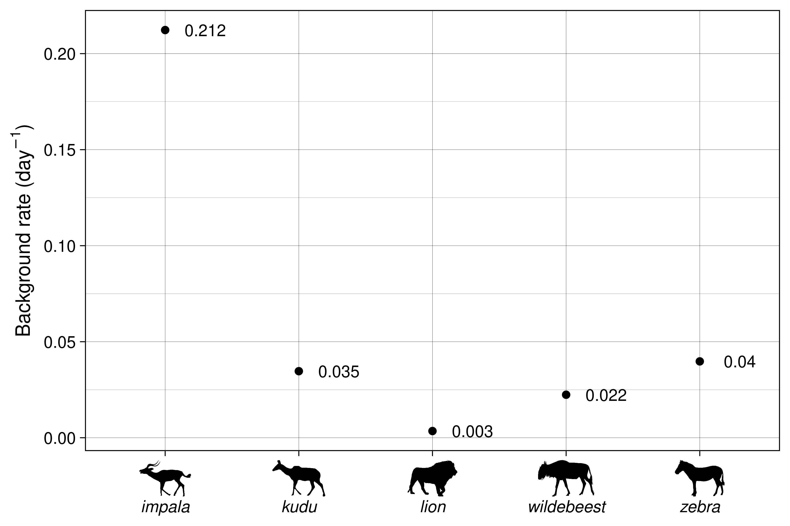

# Load functions from main folder
library(camtrapHawkes)
packages <- c("here", "lubridate", "UnitEvents",
"ggplot2", "patchwork", "dplyr")
base::lapply(packages, require)Influence of the bins
This code infers the parameters of a Hawkes process on the same data as in folder 05_example_real_data but with different bins widths.
Load libraries
Parameters
# --- Inference parameters
# Bins width
smaller <- c(1, 3, 5)
bigger <- c(7, 9, 11)
close <- c(5.5, 5.75, 6.25, 6.5)
dhours_vec <- c(smaller, bigger, close)
ndays <- 1.5
gamma <- 0.5
scale <- 10e7
estimator <- "BVL"
# --- Figures
figures_path <- here("figures/07_bins_width")Read data
dat <- read.csv(here("outputs/05_example_real_data/cleaned_data.csv"))
# Format datetimes
fmt <- "%Y-%m-%d %H:%M:%S"
dat$datetime <- as.POSIXct(dat$datetime, format = fmt)
dat$datetime <- force_tz(dat$datetime, tz = "Etc/GMT-2")Rename species
dat <- dat %>%
mutate(snapshotName = ifelse(snapshotName == "wildebeestblue",
"wildebeest", snapshotName)) %>%
mutate(snapshotName = ifelse(snapshotName == "zebraburchells",
"zebra", snapshotName))Infer several models
# --- get alphabetical species order
spp_names <- sort(unique(dat$snapshotName))
modlist <- vector("list",
length(dhours_vec))
names(modlist) <- dhours_vec
for (i in 1:length(dhours_vec)) {
# --- Get k and delta
delta <- dhours_vec[i]/24 # delta in days
k <- ceiling(ndays/delta) # k from delta and dmax
# --- Infer
inf <- infer(dat,
k = k, delta = delta,
gamma = gamma, scale = scale)
# If the error:
# Erreur dans NeuroCorr_SetParallel(threads) :
# impossible de trouver la fonction "NeuroCorr_SetParallel"
# appears, restart R, re-load packages and re-run
# --- Format inferred model
u_inf <- unpack_inf(inf,
species_names = spp_names,
k = k, delta = delta)
df_ue <- ue_model_to_df(u_inf[[estimator]])
modlist[[i]] <- df_ue
}Plot inferred interactions and rates
Now let’s plot the graphs:
# --- Initialize glist
glist_inter <- vector("list", length(modlist))
names(glist_inter) <- names(modlist)
for (i in 1:length(modlist)) {
# --- Plot
mod <- modlist[[i]]
bin <- names(modlist)[i]
g <- plot_interactions(mod,
scale = "hours",
textsize = 12,
timestep = floor((max(mod$time)*24)/3),
ystep = 0.2,
separate_self = TRUE,
title = paste("Bin width:",
bin,
ifelse(bin == "1",
"hour", "hours")))
glist_inter[[i]] <- wrap_elements(g)
}# --- Initialize glist_bg
glist_bg <- vector("list", length(modlist))
names(glist_bg) <- names(modlist)
for (i in 1:length(modlist)) {
# --- Plot
mod <- modlist[[i]]
bin <- names(modlist)[i]
g <- plot_background_rate(ue_df = mod,
textsize = 12,
write_label = TRUE,
title = paste("Bin width:",
bin,
ifelse(bin == "1",
"hour", "hours")))
glist_bg[[i]] <- g
}Comparison of different bins widths
Here are the parameters inferred with 6 hours bins in 05_example_real_data:

Below are the values for bins much smaller than the original bin width (6 hours):
smaller_names <- as.character(smaller)
wrap_plots(c(glist_inter[smaller_names],
glist_bg[smaller_names]),
nrow = 2, byrow = TRUE,
heights = c(8, 5))
The inferred interactions for the 3 tested bin widths above are pretty similar. Moreover, all nonzero interactions are the same as in the 6-hours bins version. However, some interactions present in the 6-hours bins version are missed, possibly due to lower power. The inferred background rates have similar numerical values than those inferred with 6 hours bins, and they are pretty stable except for impala. However, their relative strength is the same.
Below are the values for bins bigger than 6 hours:
bigger_names <- as.character(bigger)
wrap_plots(c(glist_inter[bigger_names],
glist_bg[bigger_names]),
nrow = 2, byrow = TRUE,
heights = c(8, 5))
Again, the inferred interactions above are pretty similar for the different bin widths. And all nonzero interactions are the same as in the 6-hours bins version, except an attraction of impala by lion that appears after 36 hours with 7 and 11 hours bins. No interactions that appeared in the 6 hours inference are missed. The inferred background rates are similar to those inferred with 6 hours bins.
Below are the values for bins close to 6 hours:
close_names <- as.character(close)
wrap_plots(c(glist_inter[close_names],
glist_bg[close_names]),
nrow = 2, byrow = TRUE,
heights = c(8, 5))
# Export plot
ggsave(file.path(figures_path, "close_bins.jpeg"),
bg = "white",
width = 24, height = 12,
dpi = 600)Again the interactions are similar to those of the 6 hours bins. We can notice that an attraction appears between lion and impala between 30 and 36 hours of delay with impala attracted by lion, which is not the case in the 6 hours bins case. This might be due to the fact that this attraction is at the edge of the 36 hours of maximal delay imposed in the original setting, whereas here the time bins extend further due to the function support extending after 36 hours (this was necessary because of the discretized bins). The inferred background rates are similar to those inferred with 6 hours bins.